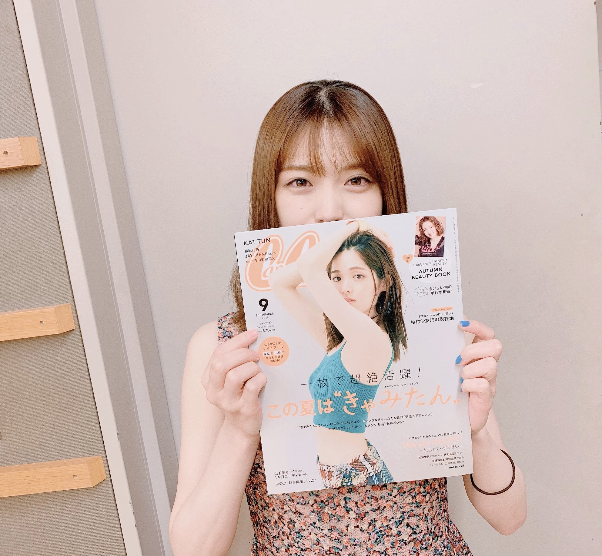
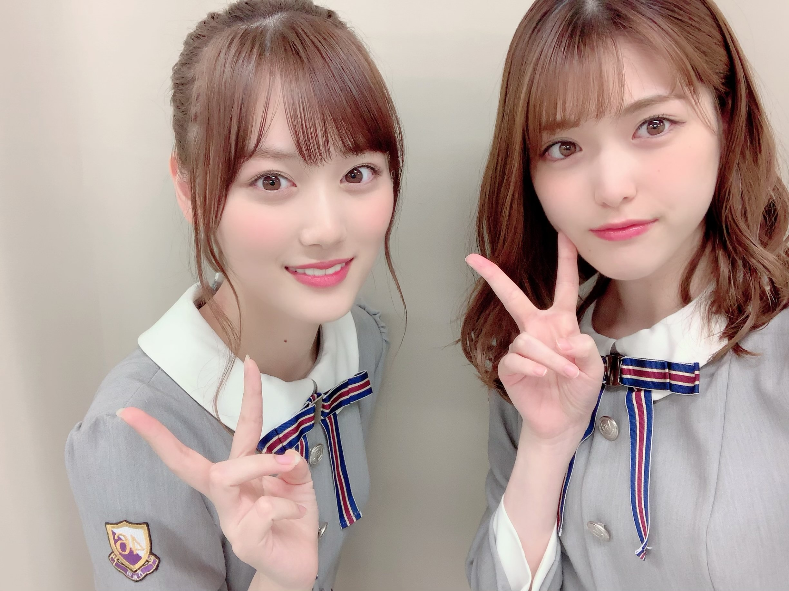
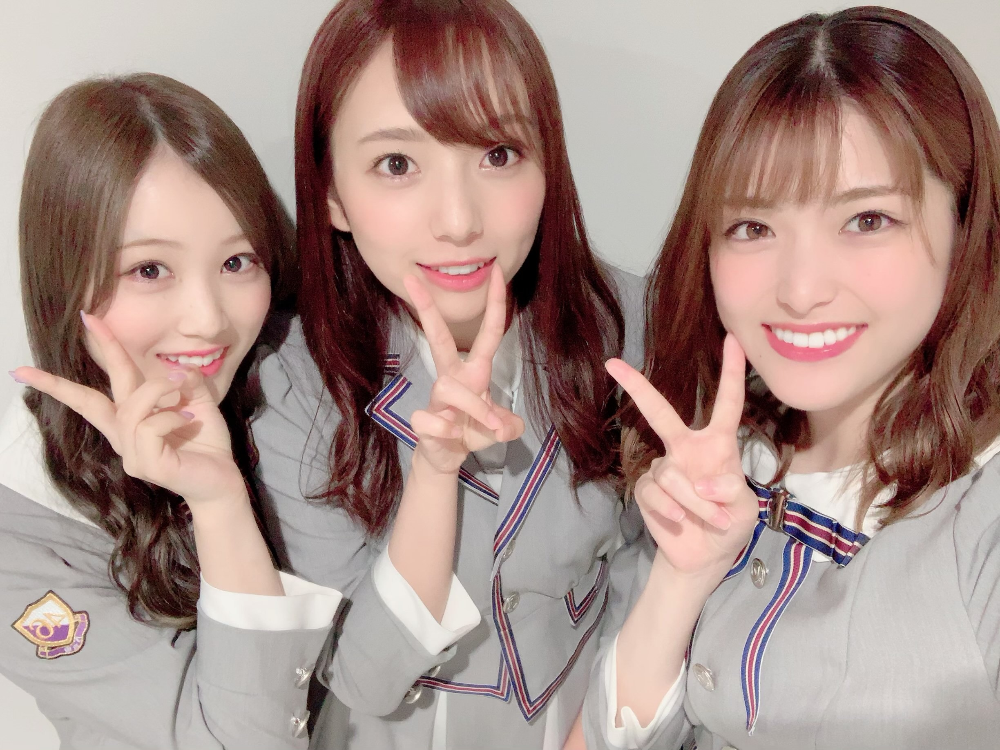
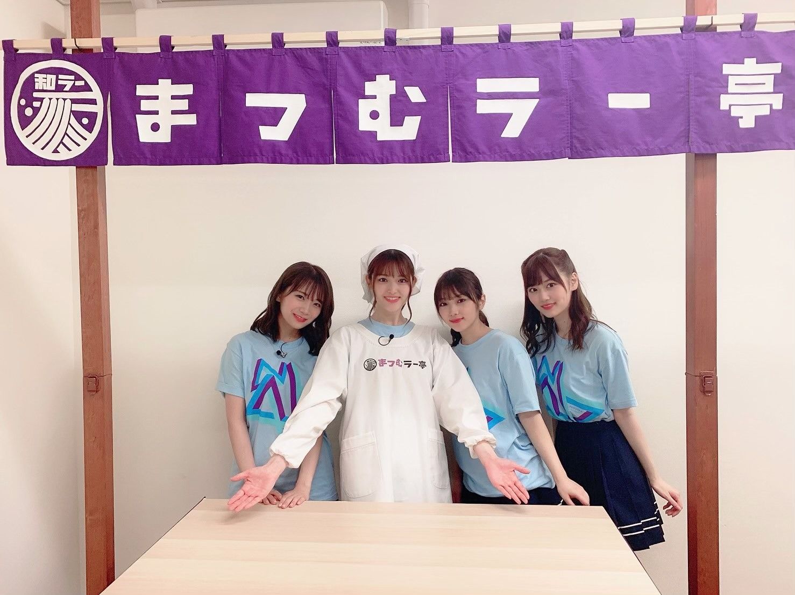

2019/0727Satきゃみたんっ(o・・o)
松村沙友理です！
CanCam9月号の表紙を務めさせていただいてます！
今月のテーマは「きゃみたん♡」
キャミソールとタンクトップです♡
可愛いきゃみたんが沢山！
そして 26歳の今の松村沙友理も
沢山 特集して頂きました。
CanCamは
今の私にとって
とても大切で大好きな場所です。
そんな大好きなCanCamの表紙ができて
幸せです♡
ぜひ 手にとってみてくださいね
あと、色んな人の好き♡が詰まった
オタク特集もおススメです！
とっても面白い特集で
読み応え抜群！！

今日はTGC TOYAMAでしたよ
LOWRYS FARMさんのステージでした！
会場で応援してくれた皆様ありがとうございました！パネルやタオルいっぱいあって
幸せでした〜♡


２０歳なりたて美月さんと
ちーむB型♡
可愛いねぇ
まつむラー亭2019 開店してます！
みてねー！！！
これは福岡ver.だよ！

やっと暑くなってきましたね。
2019/07/27 18:06
コメント(608)
まっちゅん、ブログありがとう！！大好き！
CanCam絶対買うー！真夏の特集もあるし坂道祭りやー！ブログ更新ありがと！ずっと応援してるよ
まっちゅんめっちゃ可愛いです。
cancam も買ってしっかり読みました！！
のんのんびより見ました！にゃんぱすー
暑くなるし気をつけてください
来週の握手会行きます
まっちゅん大好きです
cancam も買ってしっかり読みました！！
のんのんびより見ました！にゃんぱすー
暑くなるし気をつけてください
来週の握手会行きます
まっちゅん大好きです
TGCお疲れ様！
写真で見たよ♡
可愛かった全力ぶりっ子最高だねっ♡
生誕グッズも今日届いたよ
全部可愛すぎ
CanCamのまちゅが着てたきゃみたん可愛すぎて、きゃみたん沢山買っちゃった笑
写真で見たよ♡
可愛かった
生誕グッズも今日届いたよ
全部可愛すぎ
CanCamのまちゅが着てたきゃみたん可愛すぎて、きゃみたん沢山買っちゃった笑
さゆりん！
ブログ更新ありがとう〜
CanCam絶対みるねー！
ブログ更新ありがとう〜
CanCam絶対みるねー！
沙友理ちゃん忙しいのにブログ更新ありがとう！
私もB型なのでチームB型入れてくださi…！！！！
沙友理ちゃん可愛ー( ; _ ; )( ; _ ; )好きー( ; _ ; )( ; _ ; )
9月の全握とか遠すぎて…
私もB型なのでチームB型入れてくださi…！！！！
沙友理ちゃん可愛ー( ; _ ; )( ; _ ; )好きー( ; _ ; )( ; _ ; )
9月の全握とか遠すぎて…
更新ありがとー！！！
TGCも良かったし、まつむラー亭むっちゃ面白かった！
来週握手しにいくね！！！！
TGCも良かったし、まつむラー亭むっちゃ面白かった！
来週握手しにいくね！！！！
まちゅ、CanCam買ったよー！
表紙も内容も素晴らしい！
可愛いかったまちゅが大人になっていくにつれ、どんどん可愛くて美しくて麗しいまちゅに成長しているのが改めて実感出来る内容でした。
アニメに対するまちゅの情熱も読みごたえあったよ！
保存用に2冊買って正解でした！
表紙も内容も素晴らしい！
可愛いかったまちゅが大人になっていくにつれ、どんどん可愛くて美しくて麗しいまちゅに成長しているのが改めて実感出来る内容でした。
アニメに対するまちゅの情熱も読みごたえあったよ！
保存用に2冊買って正解でした！
いつも元気をもらってるよ〜〜
雑誌も読んだよ！
暑いけど体調には気をつけてね❣️
雑誌も読んだよ！
暑いけど体調には気をつけてね❣️
まつむラー亭毎回楽しみです❗️
次回は誰か来店するのかな
次回は誰か来店するのかな
ランウェイお疲れ様です！
美しさと可愛さがミックスされていて“LOVE”以外言葉が思いつかなかったです♡♡
CanCam買いましたよー！！買う前から棚から一際目立っていてすぐ見つけられました✩.*˚
松村沙友理さんがいっぱい詰まってて素敵でした(◦︎˙-˙◦︎)
Instagramで美月ちゃんのハッシュタグも付けてくれていて｢なんて素敵な先輩なんだろう｣って思いました！
体調に気をつけてくださいね！！
美しさと可愛さがミックスされていて“LOVE”以外言葉が思いつかなかったです♡♡
CanCam買いましたよー！！買う前から棚から一際目立っていてすぐ見つけられました✩.*˚
松村沙友理さんがいっぱい詰まってて素敵でした(◦︎˙-˙◦︎)
Instagramで美月ちゃんのハッシュタグも付けてくれていて｢なんて素敵な先輩なんだろう｣って思いました！
体調に気をつけてくださいね！！
まっちゃん！好き〜
雑誌絶対買いますーー

雑誌絶対買いますーー
さゆりん、富山、ガルコレ、お疲れ様です
綺麗で、かっこよかったよ
キャンキャン、たくさん、かったよ、大人さゆりんで、たまらなく、好きです、ありがとう
体に気をつけて、お仕事頑張ってね。
またね大好き過ぎる❤️❤️❤️可愛い可愛い可愛い
綺麗で、かっこよかったよ
キャンキャン、たくさん、かったよ、大人さゆりんで、たまらなく、好きです、ありがとう
体に気をつけて、お仕事頑張ってね。
またね大好き過ぎる❤️❤️❤️可愛い可愛い可愛い
さゆりん！
毎日おつかれ様です♡
ヤフオク楽しかった！のぎおびみました！
CanCam買いました！TGCみました！
日々の中にさゆりちゃんがたくさんで、
私のがんばる活力になっています。
最近、自分の中で悩んだりやるせなくなってしまうことが
多いけどしんどいなって時に、さゆりちゃんの映るTVや、さゆりちゃんの創り出す１つ１つの媒体(?)が
私の支えというか気力になっていて、本当に感謝です。
これからもずっと応援しています♡！
毎日おつかれ様です♡
ヤフオク楽しかった！のぎおびみました！
CanCam買いました！TGCみました！
日々の中にさゆりちゃんがたくさんで、
私のがんばる活力になっています。
最近、自分の中で悩んだりやるせなくなってしまうことが
多いけどしんどいなって時に、さゆりちゃんの映るTVや、さゆりちゃんの創り出す１つ１つの媒体(?)が
私の支えというか気力になっていて、本当に感謝です。
これからもずっと応援しています♡！
きゃみたん！！
まちゅブログ更新ありがとう〜〜♡♡♡
TGC富山お疲れ様〜(^^)
今日は、2回目の「いつのまにか、ここにいる」見てきたよ！
そしてLOWRYS FARMがたまたま近くにあったのでまちゅが着てたその服を即購入しました！！！約1万円！
ランウェイも可愛かった〜♡
CanCamも買ったよ！表紙おめでとう〜(*^^*)
まっちゅん細すぎる！スタイル良すぎて！
海外後の撮影だったんだね、可愛い〜
今月号は真夏ちゃんもCanCamに登場してるから最高だね！
セブンネットで買ったからポストカードも付いてきて好き！
またの表紙もお待ちしてます(^^)
和ラーも毎度毎度可愛いくて可愛いくて何回もループさせてもらってます！まちゅの食べてる姿も見たい〜
次のも楽しみに待ってるね！！
TGC富山お疲れ様〜(^^)
今日は、2回目の「いつのまにか、ここにいる」見てきたよ！
そしてLOWRYS FARMがたまたま近くにあったのでまちゅが着てたその服を即購入しました！！！約1万円！
ランウェイも可愛かった〜♡
CanCamも買ったよ！表紙おめでとう〜(*^^*)
まっちゅん細すぎる！スタイル良すぎて！
海外後の撮影だったんだね、可愛い〜
今月号は真夏ちゃんもCanCamに登場してるから最高だね！
セブンネットで買ったからポストカードも付いてきて好き！
またの表紙もお待ちしてます(^^)
和ラーも毎度毎度可愛いくて可愛いくて何回もループさせてもらってます！まちゅの食べてる姿も見たい〜
次のも楽しみに待ってるね！！
さゆり～ん
パンチ！笑
よっちゃん
パンチ！笑
よっちゃん
fukuoka与田ちゃん見れたーーー
まっちゅん面白い
まっちゅん面白い
1コメかな？！
これからも頑張ってください！
これからも頑張ってください！
まちゅ
きゃみたんね。
ふぁみたんではないのね？（笑）
きゃみたんね。
ふぁみたんではないのね？（笑）
進化し続けるさゆりちゃんをいつまでも推していきます
可愛い！すきだよ！
CanCamとっても綺麗でした♡
アザーカットも全部まとめて写真集にしてほしいくらい！！！
TGCもお疲れ様でした♡ベージュのセットアップかな？とっても似合っていてスタイル抜群でかっこいいです☺︎
チームB型かわいいですね☺︎やっぱりさゆりちゃん髪伸びるの早い気がします！巻いてるのもかわいい！
アザーカットも全部まとめて写真集にしてほしいくらい！！！
TGCもお疲れ様でした♡ベージュのセットアップかな？とっても似合っていてスタイル抜群でかっこいいです☺︎
チームB型かわいいですね☺︎やっぱりさゆりちゃん髪伸びるの早い気がします！巻いてるのもかわいい！
ええで！！
さゆりんごブログ更新ありがとう。
ライブすんごい楽しかった。
あと一ヶ月で誕生日たね。
応援します。
ライブすんごい楽しかった。
あと一ヶ月で誕生日たね。
応援します。
可愛すぎた
更新ありがとう
26歳も宇宙一番可愛い
大好きです
26歳も宇宙一番可愛い
大好きです
キャミたんぎゃんきゃわでつらたん！！
きゃみたん♥️
綺麗だね❗発売楽しみにしてます✨
綺麗だね❗発売楽しみにしてます✨
かわいいなぁぁもう(*^。^*)
誕生日前月祭おめでとぉ!!
まっちゅんこんにちは！
ブログ更新ありがとう！！
cancamの表紙おめでとうございます！！
沙友理ちゃん表紙だからいつもよりたくさん買いました＾＾
中身はモデルやオタクの沙友理ちゃんをたくさん見れてすごくすごく良かったです！！
今年の流行語はきゃみたんになるぐらい流行ればいいね笑
まつむラー亭ももちろん見ました！
いつも後半と店長との絡み楽しんでいます笑
TGC TOYAMAお疲れ様でした。
モデル松村さんはかっこよくて可愛いくて素敵です、
たくさんのファンの人がいて嬉しいランウェイになってよかったです
美月ちゃんの誕生日、インスタでもダグをつけていたよね
後半想いの素敵な先輩ですね＾＾これからもcancam組の2人で頑張ってほしいです。
24thの選抜発表がありましたね。
色々な思いはあるでしょうが、福神おめでとうございます！
これから歌番組なのでの披露もあると思うので楽しみにしています。大好きなメンバーとたくさんの思い出を作って楽しいシングルにして下さいね＾＾
ライブの感想などはまたコメントしたいなと思います。
暑くなってきたので、体調に気をつけて楽しんで下さい
ブログ更新ありがとう！！
cancamの表紙おめでとうございます！！
沙友理ちゃん表紙だからいつもよりたくさん買いました＾＾
中身はモデルやオタクの沙友理ちゃんをたくさん見れてすごくすごく良かったです！！
今年の流行語はきゃみたんになるぐらい流行ればいいね笑
まつむラー亭ももちろん見ました！
いつも後半と店長との絡み楽しんでいます笑
TGC TOYAMAお疲れ様でした。
モデル松村さんはかっこよくて可愛いくて素敵です、
たくさんのファンの人がいて嬉しいランウェイになってよかったです
美月ちゃんの誕生日、インスタでもダグをつけていたよね
後半想いの素敵な先輩ですね＾＾これからもcancam組の2人で頑張ってほしいです。
24thの選抜発表がありましたね。
色々な思いはあるでしょうが、福神おめでとうございます！
これから歌番組なのでの披露もあると思うので楽しみにしています。大好きなメンバーとたくさんの思い出を作って楽しいシングルにして下さいね＾＾
ライブの感想などはまたコメントしたいなと思います。
暑くなってきたので、体調に気をつけて楽しんで下さい
沙友理ちゃん更新ありがとう！
暑くなってきたから水分補給しっかりして熱中症に気をつけてね！
暑くなってきたから水分補給しっかりして熱中症に気をつけてね！
ブログありがとう！インスタもブログも待ってます
ブログ更新おめでとうおおおお
今日のTGCめちゃくちゃ楽しかったよおおおお
「さゆりんご」タオルには気づいた？
ランウェイの先端の決めポーズがマジでかわいかったよ！
これからもお仕事頑張ってねー！
今日のTGCめちゃくちゃ楽しかったよおおおお
「さゆりんご」タオルには気づいた？
ランウェイの先端の決めポーズがマジでかわいかったよ！
これからもお仕事頑張ってねー！
まっちゅーん！
おつかれさまっちゅん！
これは書店へ急がねば！
でも今日は生誕Tが届くので急いで家に帰ることにします！
全ツ福岡公演とてもとても良きでした！さゆりんご劇団良かったですねぇ。オーディションいつあってもいいように備えておかなきゃです。
そう！福岡で水炊き食べたんよ！めっちゃ美味しかった！
とゆー事で、バイバーイ
おつかれさまっちゅん！
これは書店へ急がねば！
でも今日は生誕Tが届くので急いで家に帰ることにします！
全ツ福岡公演とてもとても良きでした！さゆりんご劇団良かったですねぇ。オーディションいつあってもいいように備えておかなきゃです。
そう！福岡で水炊き食べたんよ！めっちゃ美味しかった！
とゆー事で、バイバーイ
まちゅ＼(^o^)／お疲れ様でした
CanCam見たよ
さすがまちゅはバイスボデイだな(｡>﹏<｡)♡♡♡
アニメ特集ページはガラッとファッション変わったけど（笑）
これからも頑張って(/･ω･)/
TGC頑張って(/･ω･)/
ああ、もっとまちゅと美月という組み合わせ見たいなあ(*´ω｀*)
CanCam見たよ
さすがまちゅはバイスボデイだな(｡>﹏<｡)♡♡♡
アニメ特集ページはガラッとファッション変わったけど（笑）
これからも頑張って(/･ω･)/
TGC頑張って(/･ω･)/
ああ、もっとまちゅと美月という組み合わせ見たいなあ(*´ω｀*)
まっちゅん可愛すぎるて。笑
ほんまにやばいー！！
だいすきー！！！
ほんまにやばいー！！
だいすきー！！！
かわいすぎる！！
表紙おめでとうございます。
TGCお疲れ様でした
TGCお疲れ様でした
まっちゅんすき
CanCam買ったよ
CanCam買ったよ
神宮ライブまであと一ヶ月ちょっと！
待ちきれない〜
待ちきれない〜
ブログ更新ありがとう！
Cancam買った！もうどこも最強に可愛すぎて女友達にすすめました笑
全ツ大阪神宮もっと熱い夏にして下さいね！
体調に気をつけて頑張って下さい
Cancam買った！もうどこも最強に可愛すぎて女友達にすすめました笑
全ツ大阪神宮もっと熱い夏にして下さいね！
体調に気をつけて頑張って下さい
さゆりんご！！ ブログ更新ありがとう
ブログ更新ありがとう
福岡のライブ、行ってきたでぇ。相変わらずまちゅ、可愛かったわｗ。二日共参加できたし、まちゅからもレスもらえたしで最高の二日間やった。ありがとうやで。次の大阪も行くからまたレスもらえるように目一杯アピるわｗ。もう、最近のノギは忙しさがハンパないから体には十分気を付けてな。一生、推していきますさかいに。
まちゅ、最高！
まちゅブログ更新ありがと！
どんどん可愛くなってる沙友理さん好きです
体調に気をつけて頑張って！！
どんどん可愛くなってる沙友理さん好きです
体調に気をつけて頑張って！！
さゆりんご応援してます！！
自分もB型でーーーす！
自分もB型でーーーす！
まっちゅんTGC富山お疲れ様です！！
生配信見てたのだけどかわいい、かっこいい
色んなまちゅが見れました
早く握手したいです。。。
暑くなってきたから体調には気をつけて頑張ってください！
生配信見てたのだけどかわいい、かっこいい
色んなまちゅが見れました
早く握手したいです。。。
暑くなってきたから体調には気をつけて頑張ってください！


インスタもブログも更新ありがとうございます！